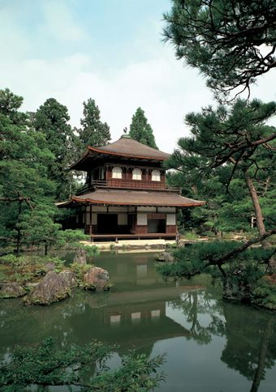

Formal name, Jisho-ji. Founded in 1482 by the Muromachi Shogun, Ashikaga Yoshimasa. The design shows the influence of the Temple of the Golden Pavilion, which was founded by Yoshimasa's grandfather, Ashikaga Yoshimitsu. The garden is unforgettable for its Ginshadan, a "sea" of white sand with small ridges representing waves, and Kogetsudai, a sand cone shaped to resemble Mount Fuji. The austerity of the Silver Pavilion stands in contrast to the brilliant splendor of the Golden Pavilion. A visit to this temple will help you understand the Japanese aesthetic concept of wabi/sabi (austere serenity, elegant simplicity). It should be pointed out that, while the upper stories of the Golden Pavilion are covered in gold leaf, there is no silver leaf on the Silver Pavilion.
Return